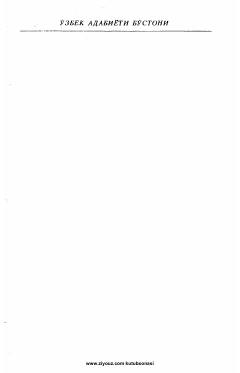

SShayboniyxon hayoti va harbiy yurishlari tasvirlangan tarixiy-badiiy doston.
Muhammad Solihning ushbu dostoni Shayboniyxonning hayoti va harbiy yurishlariga bag'ishlangan tarixiy-badiiy asardir. Asar XVI asr boshlaridagi siyosiy voqealar va o'sha davr muhitini aks ettiruvchi muhim manbalardan biri hisoblanadi.